Debug Ballerina programs
When writing large-scale applications with complex logic, you may encounter syntax, semantic, or runtime issues in your code. The Ballerina compiler comes in handy when detecting syntax and semantic issues. However, it is impossible for a compiler to detect runtime errors like logical errors because they occur during the program execution after a successful compilation. This is where the dedicated debugging tooling support becomes important.
Currently, a feature-rich debugging experience for troubleshooting Ballerina applications is provided via the Ballerina Visual Studio Code extension.
Debug using CodeLens
The Ballerina extension provides multiple options to debug Ballerina applications and the most convenient way will be using the context-aware debug CodeLens support.
However, if you require launching debug sessions with additional configurations (i.e., program arguments, environment variables), you can use the launch.json configurations.
Info: For more information, see Start a debug session with configurations).
Program debug sessions
Follow the steps below to start a quick debug session using CodeLens.
-
Open the folder, which includes the Ballerina program you want to debug and open the source file in the editor.
-
Add the debug points you require by clicking in front of the line numbers of the file you want to debug.
-
Click the
DebugCodeLens, which will appear just above themain()method.
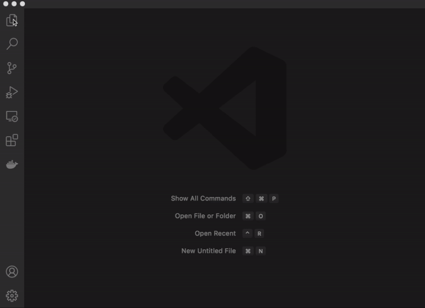
Test debug sessions
The Ballerina test functions can also be debugged using CodeLens. The debug CodeLens will automatically appear on top of each Ballerina test function
and you are able to execute/debug only the selected test case by clicking on the corresponding CodeLens as shown below.
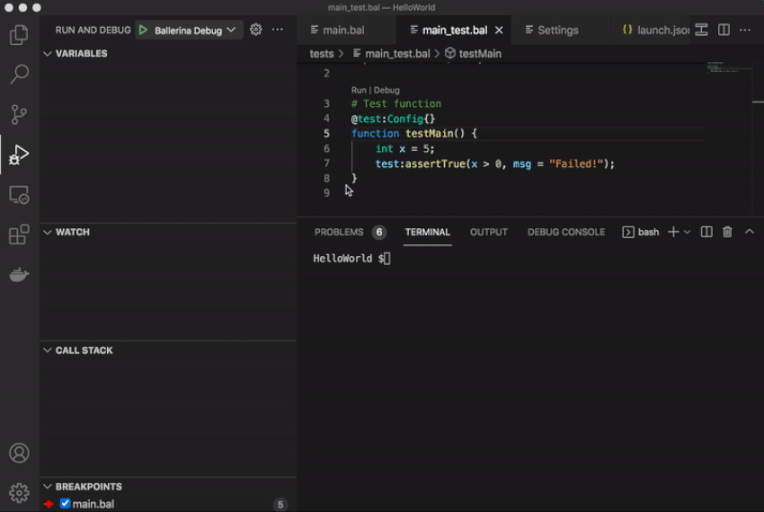
Debug using configurations
Follow the steps below to start a debug session with configurations. All the configurations need to be added in the launch.json file.
-
Open the folder, which includes the Ballerina program you want to debug and select the file.
-
Press the Control + Shift + D keys (for Mac: Command + Shift +D) to launch the Debugger view.
-
Click create a launch.json file and then select Ballerina Debug as the Environment.
You will see the opened
launch.jsonfile. -
Add/edit the relevant configurations for debugging in the
launch.jsonfile. -
Add the debug points you require by clicking in front of the line numbers of the file you want to debug.
-
Start a program, test, or remote debug session as shown below.
Info: If you launch the debug session through VS Code, the working directory will be the Ballerina package root. However, you can use remote debugging for alternative working directories.

Program debug sessions
Follow the steps below to start a program debug session.
-
Select Ballerina Debug from the drop-down available in the upper left corner to start a program debugging session.
-
Click the Start Debugging icon on the upper left corner to start debugging.
You will see the output in the DEBUG CONSOLE.
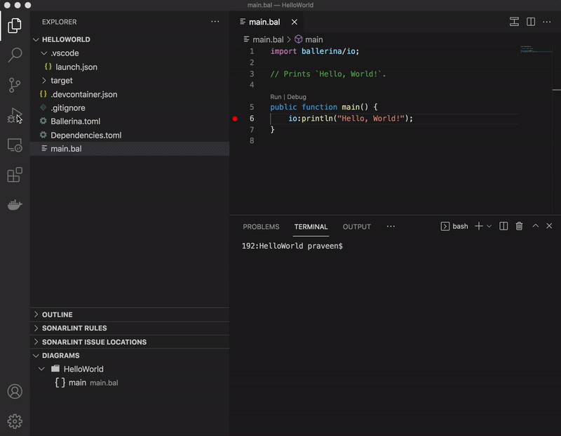
Test debug sessions
Follow the steps below to start a test debug session.
-
Select Ballerina Test from the drop-down menu available in the upper-left corner to start a test debugging session.
-
Click the Start Debugging icon in the upper-left corner to start debugging.
You will see the output in the DEBUG CONSOLE as shown below.

Remote debug sessions
Follow the steps below to start a remote debug session.
-
Create the
launch.jsonconfiguration file if it is not created already. For instructions on creating thelaunch.jsonfile, see Start a debug session with configurations. -
Open the
launch.jsonfile and configure thedebuggeeHostanddebuggeePortattributes under theBallerina Remoteconfigurations section accordingly. -
After setting the remote debug configurations, select Ballerina Remote from the drop-down available in the upper left corner to start a remote debugging session.
-
Open a terminal and execute the debug command that is relevant to your requirement from the ones below:
Code action Description Debugging a Ballerina package or a single file bal run --debug <DEBUGGEE_PORT> <BAL_FILE_PATH/PACKAGE_PATH>Debugging a Ballerina executable JAR bal run --debug <DEBUGGEE_PORT> <EXECUTABLE_JAR_FILE_PATH>Debugging Ballerina tests bal test --debug <DEBUGGEE_PORT> <PACKAGE_PATH>The terminal will show the following log:
Listening for transport dt_socket at address: 5005 -
Click the Start Debugging icon on the upper-left corner to start debugging.
You will see the output in the DEBUG CONSOLE as shown below.

Use debug configurations
The Ballerina debugger supports various debug configuration options via the launch.json file.
Info: You can either add the configurations to the existing
launch.jsonfile, which is located in your workspace root under the.vscodedirectory or follow the steps below to generate thelaunch.jsonconfigurations file with the default values.
-
Click the Run and Debug icon in the left menu or press the Control + Shift + D keys to launch the Debugger view (for Mac - Command + Shift +D).
-
Click create a launch.json file and select Ballerina Debug.
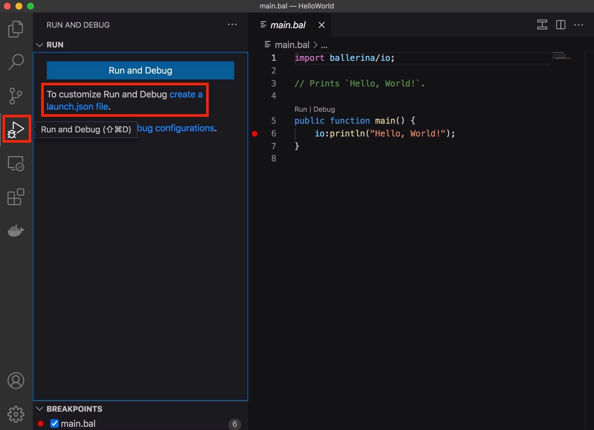
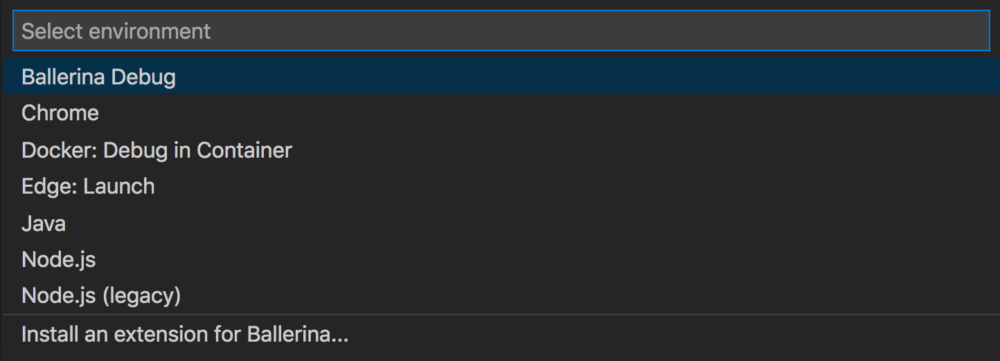
Given below are the default configurations generated for debugging Ballerina:

Ballerina launch.json attributes
The auto-generated launch.json file consists of three main configurations named Ballerina Debug, Ballerina Test, and Ballerina Remote.
Each configuration supports a different set of attributes, which will be provided via IntelliSense completion suggestions.
The following attributes are mandatory for all configurations.
| Attribute | Description |
|---|---|
name |
The reader-friendly name to appear in the Debug launch configuration drop-down menu. |
type |
The type of debugger to use for this launch configuration. The attribute value must be kept as ballerina for all Ballerina debugging configuration types. |
request |
The request type of this launch configuration. Currently, launch and attach are supported. |
The following attributes are supported for all Ballerina launch configurations.
| Attribute | Description |
|---|---|
programArgs |
Any program arguments that are required to be passed into the main function of the Ballerina program to be launched can be passed as a list of strings. |
commandOptions |
If required, you can configure command options for the Ballerina program to be launched as a list of strings. You can see the list of all the available command options by executing the following CLI commands in your terminal. - For the Ballerina Debug configuration: bal run --help - For the Ballerina test configuration: bal test --help |
env |
Any environment variables you need to configure for launching the Ballerina program can be passed as a map of strings (name and value). |
debugTests |
Indicates whether to debug the tests for the given script. |
The following attributes are supported for all Ballerina attach configurations.
| Attribute | Description |
|---|---|
debuggeeHost |
Host address of the remote process to be attached (if not specified, the default value will be the localhost(127.0.0.1)). |
debuggeePort |
Port number of the remote process to be attached. |
Use the debugging features
The following debugging features are currently supported by the Ballerina VScode extension.
Conditional breakpoints
The Ballerina debugger provides the ability of setting Ballerina expression-based conditions for regular breakpoints. The debugger will suspend at the breakpoint whenever the expression evaluates to true.
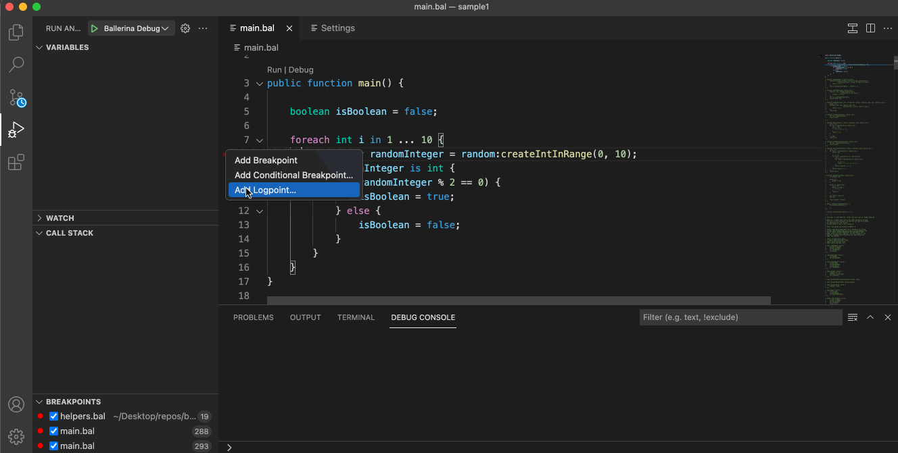
Logpoints
Logpoints are another variant of breakpoints, which do not "break" the program execution and instead, log a message to the console. Logpoints are especially useful for injecting logging while debugging production servers that cannot be paused or stopped.
Logpoints can also be enabled/disabled and can be controlled by conditions similar to regular breakpoints.
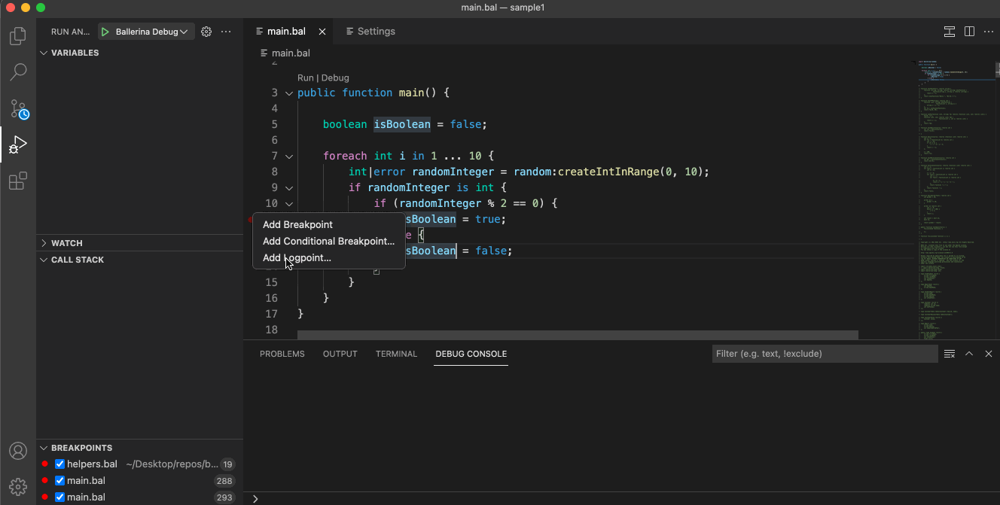
Log messages can either be plain texts or string templates, which can contain expressions to be evaluated within the ${} syntax.
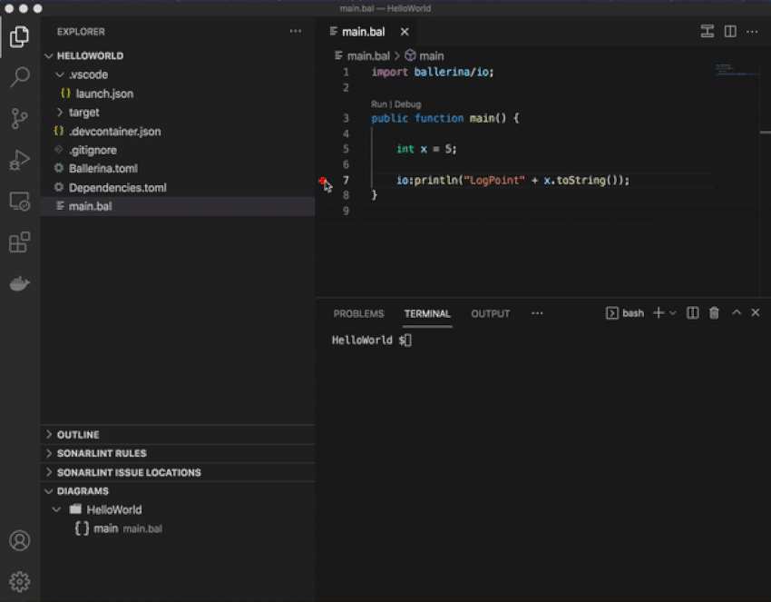
Pause and continue
Any running Ballerina programs can be suspended immediately at the current execution line of the program using the pause command in VS Code as shown below.
With this feature, you are able to suspend (and resume) the remote VM resulting in a debug hit at the current execution line of the program.
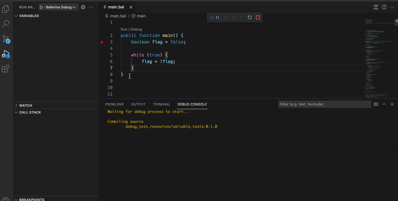
This feature will be useful in contexts where the program seems to be hanged due to blocking operations/infinite loops and when you want to know the exact line that the program is waiting on.
Expression evaluation
Ballerina expression evaluator allows evaluating Ballerina variables and expressions at runtime by allowing them to be viewed when the IDE is in the break mode.
The Ballerina VSCode debugger lets you evaluate expressions in the ways below.
Use the debug console
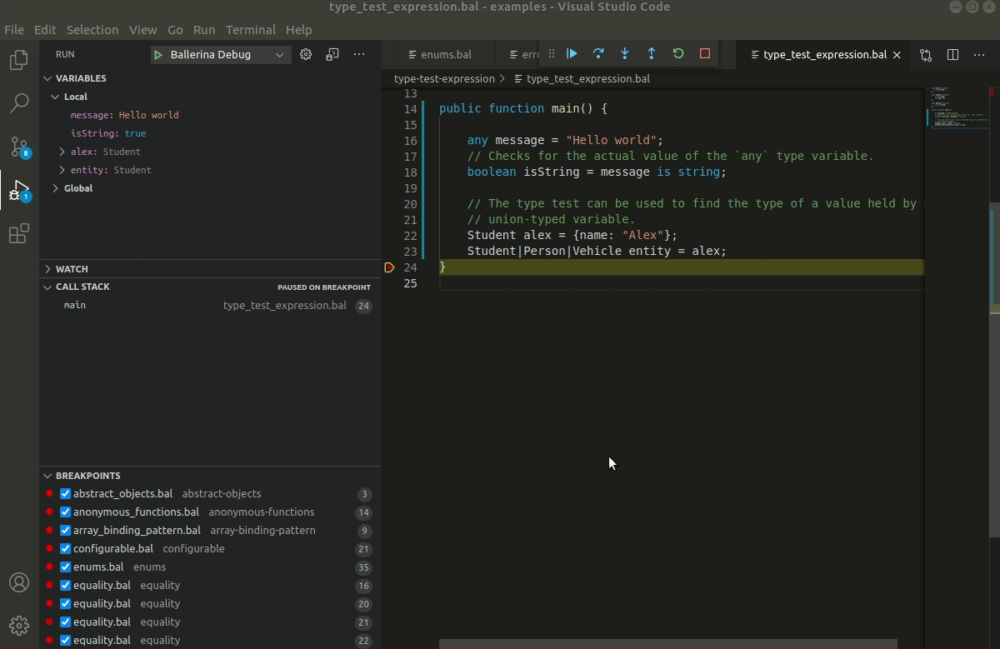
Use the watch window
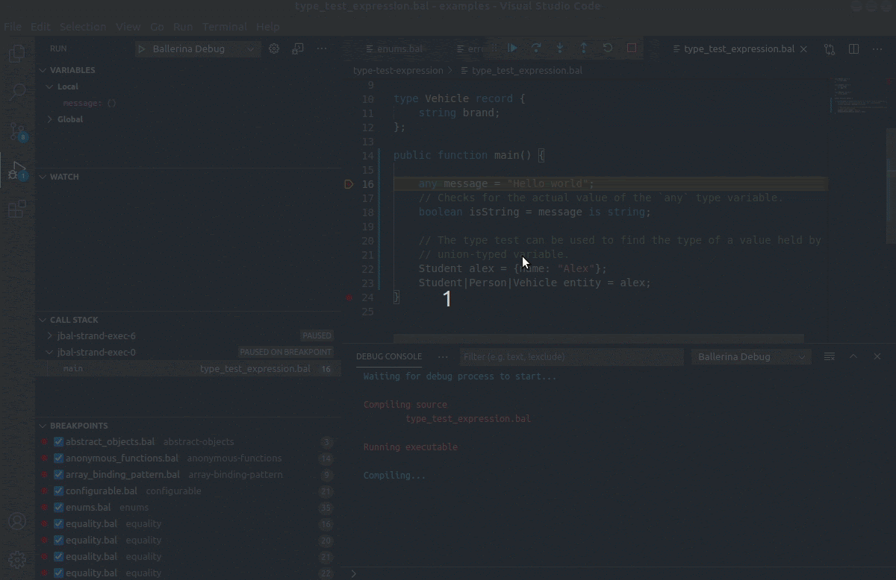
Info: For more information on the VS Code debugging features, go to VS Code documentation.